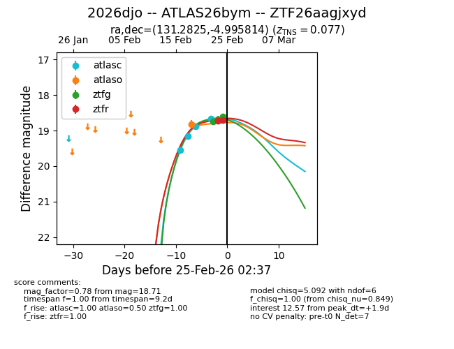
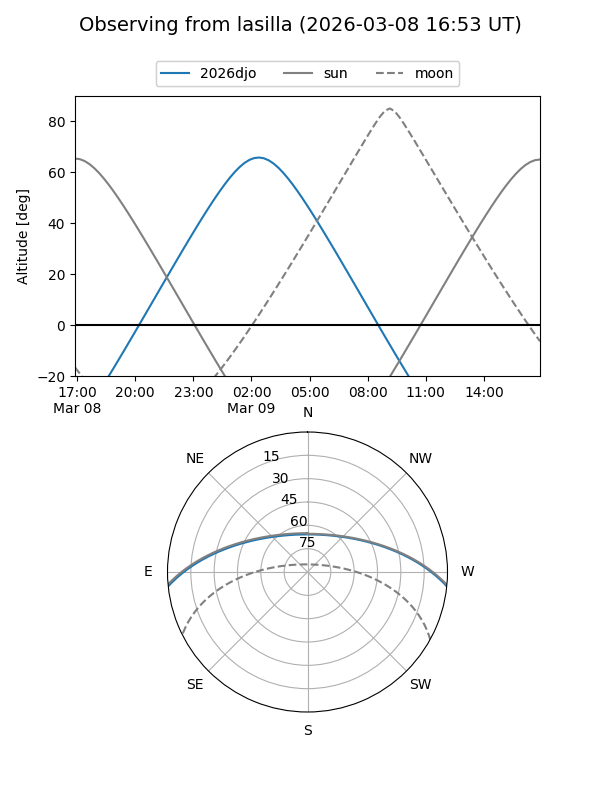
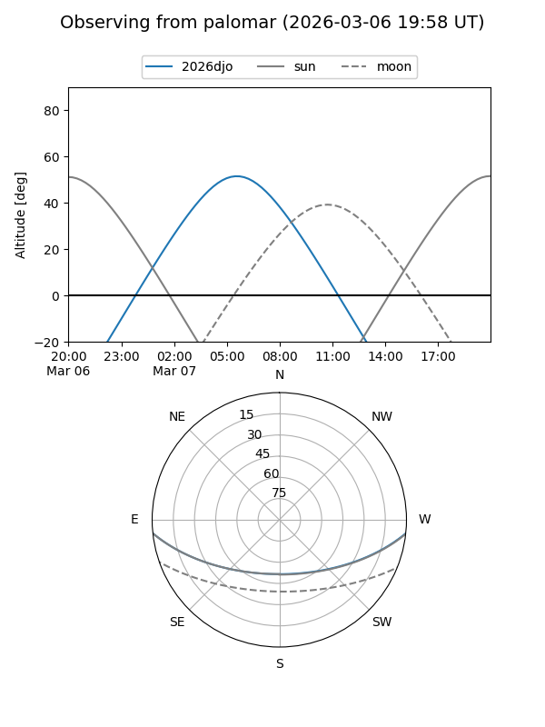
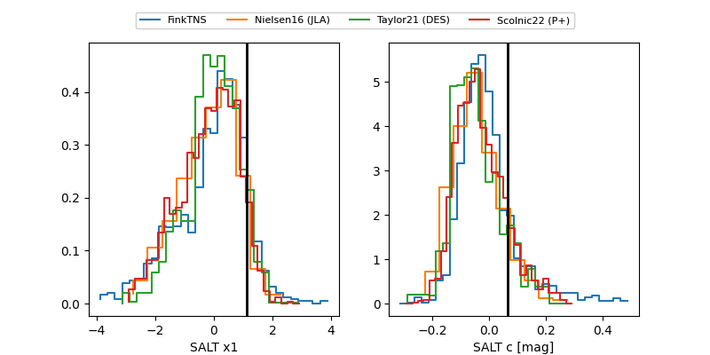

2026djo
Target 2026djo at 2026-02-25 02:38
Aliases and brokers:
FINK: link
Lasair: link
ALeRCE: link
TNS: link
YSE: link
alt names
ZTF26aagjxyd (ztf,fink_ztf)
2026djo (tns,yse)
ATLAS26bym (atlas)
Coordinates:
equatorial (ra, dec) = 131.2825,-4.99581
equatorial (HMS+DMS) = 08:45:07.80,-04:59:44.93
galactic (l, b) = (231.4656,+22.47603)
Flags:
confirmed ia
Photometry:
last atlasc=18.66, atlaso=18.81, ztfg=18.60, ztfr=18.71
4 atlasc, 1 atlaso, 3 ztfg, 2 ztfr detections
Lightcurve

Visibility


Additional plots
